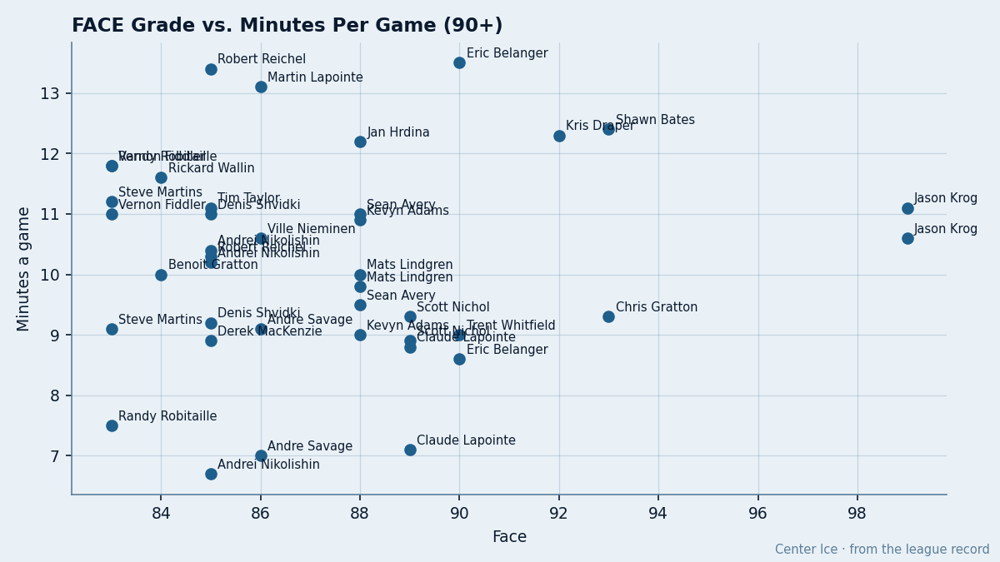

Faceoff Kings: 4 of the League's 13 Best Draw-Men Play Under 12 Minutes
The Book says they win the puck. The lineup card says they don't need to.
 Doug ReimerAnalytics editor, ex-video coach · The Slot Report
Doug ReimerAnalytics editor, ex-video coach · The Slot Report
The Bureau's Book grades 13 players at 90 or above in the faceoff circle. Four of them carry fewer than 12 minutes of ice time a night. The method: filter the Book's FACE attribute at 90 or higher, join to current-season minutes per game, flag anyone under 12.
The four buried men: Eric Belanger at  Los Angeles Kings, 90 face, 8.6 minutes a night. Trent Whitfield at
Los Angeles Kings, 90 face, 8.6 minutes a night. Trent Whitfield at  New York Rangers, 90 face, 9.0 minutes. Jason Krog at
New York Rangers, 90 face, 9.0 minutes. Jason Krog at  Mighty Ducks of Anaheim, 99 face, 11.1 minutes. And Chris Gratton at
Mighty Ducks of Anaheim, 99 face, 11.1 minutes. And Chris Gratton at  Nashville Predators, 93 face, 9.3 minutes across 20 games before a neck injury sidelined him.
Nashville Predators, 93 face, 9.3 minutes across 20 games before a neck injury sidelined him.
Belanger and Whitfield sit on the two deepest faceoff rooms in hockey by the Book. New York Rangers averages 83.8 across its center and wing corps; Los Angeles Kings averages 83.3. The depth is so thick that the men who grade elite in the circle can't all get top-six shifts. Krog plays 11.1 minutes at Mighty Ducks of Anaheim behind Samuel Pahlsson (80 face) and the top two wings.
Gratton's case is different. A neck spell cost him 14 games; his 9.3 minutes per game come from a 20-game sample. He was at 16.6 per game across 33 appearances earlier in the season before the injury hit. That's the one man on this list whose minutes might recover on their own.
The Sillinger problem
Sillinger's issue is position, not ice time.
 Mike Sillinger81 carries the league's second-best faceoff grade in the Book: 96, behind only Krog's 99. His overall sits at 88. He plays L3RW and special-teams unit 5 at
Mike Sillinger81 carries the league's second-best faceoff grade in the Book: 96, behind only Krog's 99. His overall sits at 88. He plays L3RW and special-teams unit 5 at  Phoenix Coyotes. Two centers rated 78 overall play first and second center:
Phoenix Coyotes. Two centers rated 78 overall play first and second center:  Jan Hrdina71 (88 face) and
Jan Hrdina71 (88 face) and  Robert Reichel71 (85 face).
Robert Reichel71 (85 face).
Sillinger wins draws at the rate the Bureau's Book says an elite center wins them. The lineup card puts him on the third wing, behind two men he grades above by 10 points at center and by 8 and 11 in the circle. His 18.1 minutes a night are reasonable for a third-liner. They are not what the Book says he should get.

Who plays where
Every man the Book rates 90 or above in the circle, with current ice time:
| player | abbr | face | overall | mpg | gp |
|---|---|---|---|---|---|
| Jason Krog | ANA | 99 | 69 | 11.1 | 46 |
| Darren McCarty | DET | 97 | 75 | 19.1 | 56 |
| Mike Sillinger | PHX | 96 | 88 | 18.1 | 34 |
| Joe Nieuwendyk | FLA | 95 | 82 | 22.6 | 55 |
 Keith Tkachuk84 Keith Tkachuk84 | STL | 94 | 90 | 22.3 | 39 |
| Bobby Holik | NYR | 93 | 81 | 20.9 | 58 |
| Todd Marchant | CBJ | 93 | 82 | 20.3 | 54 |
| Craig Conroy | CGY | 93 | 82 | 20.3 | 56 |
| Chris Gratton | NSH | 93 | 79 | 9.3 | 20 |
| Shawn Bates | NYI | 93 | 78 | 18.5 | 43 |
| Kris Draper | DET | 92 | 77 | 16.8 | 56 |
| Eric Belanger | LA | 90 | 72 | 8.6 | 54 |
| Trent Whitfield | NYR | 90 | 66 | 9.0 | 59 |
Of the 13, seven get 18 or more minutes a night. The other six cluster under 12, and four of those six carry an overall under 80. That's the system working: a 66-overall faceoff man gets sheltered minutes because his game beyond the circle doesn't sustain top-six shifts.
Sillinger breaks the pattern. His 96 in the circle and 88 overall are the Book's case for a top-six center. The card has him on the wing, logging 18.1 minutes.
The club picture
At the team level, the Book's faceoff grades range from  New Jersey Devils at 64.2 average to New York Rangers at 83.8, across a 30-club league.
New Jersey Devils at 64.2 average to New York Rangers at 83.8, across a 30-club league.
| abbr | avg face | n centers+wings | avg mpg |
|---|---|---|---|
| NYR | 83.8 | 4 | 15.2 |
| LA | 83.3 | 10 | 13.6 |
| NSH | 82.5 | 11 | 15.9 |
| PHI | 80.2 | 12 | 12.4 |
| CGY | 79.6 | 10 | 13.8 |
| NJ | 64.2 | 9 | 13.7 |
| PIT | 64.6 | 9 | 15.1 |
| TB | 68.1 | 7 | 13.3 |
| OTT | 68.5 | 8 | 15.7 |
| CBJ | 69.6 | 18 | 11.9 |
New Jersey Devils sits second in the East at 73 points with the league's worst faceoff room by the Book.  Martin Brodeur95 papers over a lot, and New Jersey is 17 points above the eighth seed with 28 games left. But in a seven-game series against a team that can win draws, the circle becomes a problem that goaltending can't solve every night.
Martin Brodeur95 papers over a lot, and New Jersey is 17 points above the eighth seed with 28 games left. But in a seven-game series against a team that can win draws, the circle becomes a problem that goaltending can't solve every night.
 Columbus Blue Jackets carries 18 forwards in the faceoff data set and averages 69.6. The room is large and none of it grades above 82 (Marchant). Columbus sits 55 points, eighth in the West by one point. Their faceoff depth is thin and their bench is wide, which means the men who can win draws aren't getting the center position they need.
Columbus Blue Jackets carries 18 forwards in the faceoff data set and averages 69.6. The room is large and none of it grades above 82 (Marchant). Columbus sits 55 points, eighth in the West by one point. Their faceoff depth is thin and their bench is wide, which means the men who can win draws aren't getting the center position they need.
The contract-year angle
Of the 13 men rated 90+, two are in the final year of their deal: Sillinger ($1.80M, 33 years old, 94 morale) and Tyler Wright78 at CBJ doesn't qualify (82 face, not 90). Sillinger is the one with leverage. He's producing 35 points in 34 games at a center position he isn't playing. If Phoenix misses the playoffs (they sit 4 points out of the West's eighth seed with 28 games left), Sillinger walks or forces a trade in a market that pays faceoff centers.
The deadline, what the calendar has as the trade deadline, is 35 days away. The men buried on the wrong wing in a contract year are the ones who get moved.